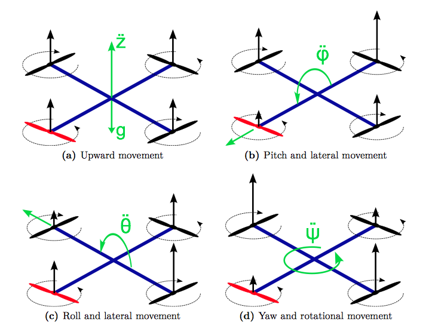
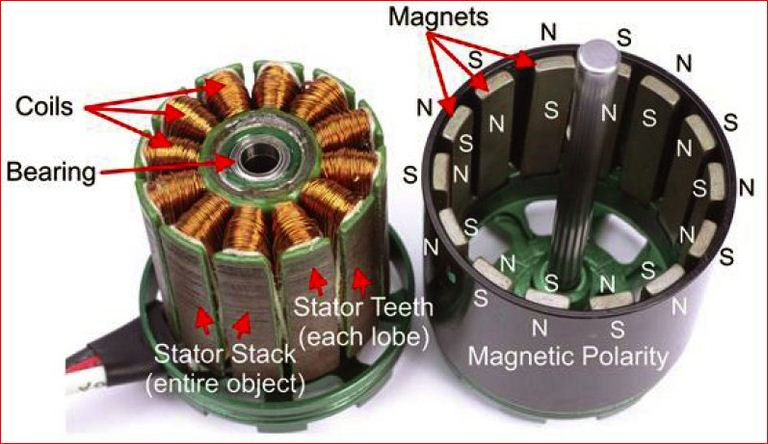
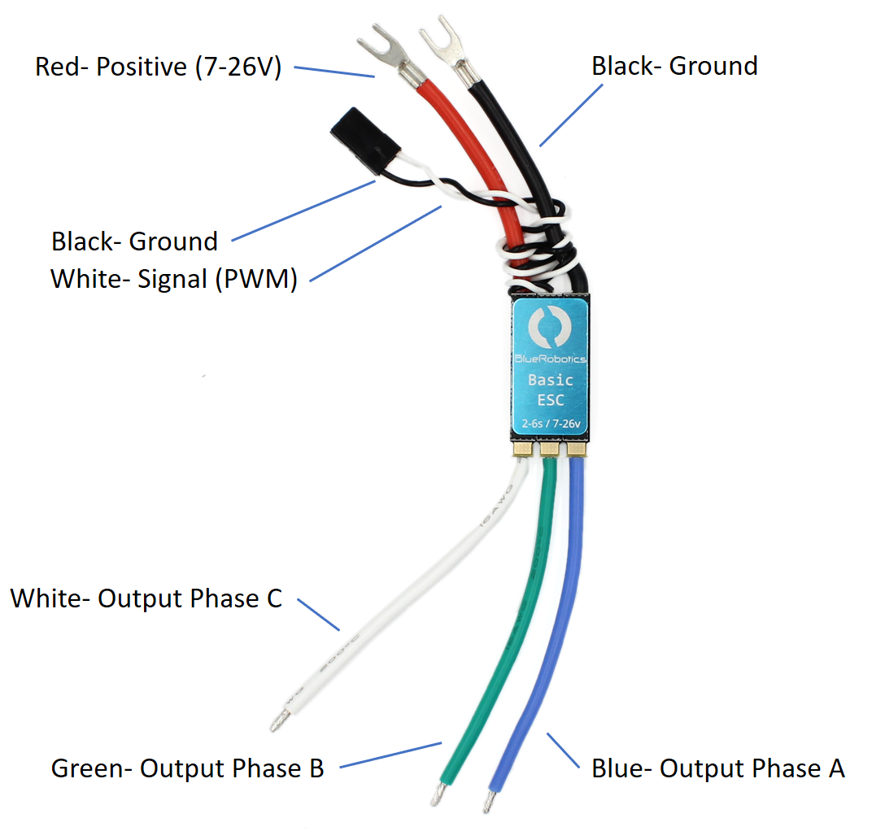
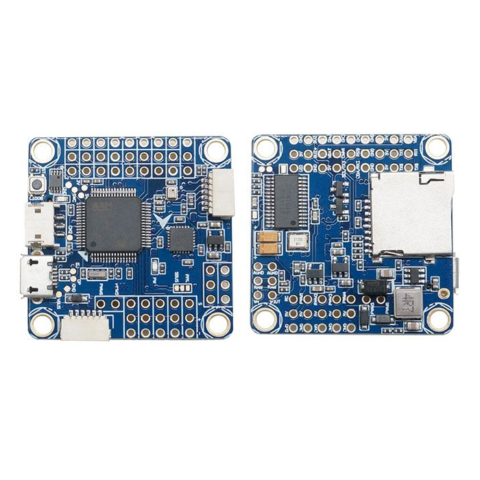

You've likely been to Best Buy and seen the DJI Mavic drones, or the Mavic Mini's or the Autel Evo on the shelf. Maybe you've seen the mini quadcopters they sell at kiosks at the mall - maybe you've seen the automated swarms that Intel has designed. They look incredibly sophisticated, and they are. But a lot of that sleek, technical look that you see is just design. In this modern age where electronics are lighter, smarter and cheaper, you'd be surprised at how simple (from a high level, pun intended) these drones really are.
The Mechanics
For starters the physics of a drone are not much more complicated than a plane. There are (generally) four motors with propellers (props) mounted on four "arms" with the "guts" or fuselage at the juncture of the arms. There may or may not be gimbal mounted cameras on them. And that's pretty much the baseline. As far as the "physics": one thing to keep in mind to help understand how they move is that none of the arms move, the motors don't pivot, there aren't ailerons/rudders that guide airflow in order to manipulate how to drone moves (the thrust vector). All of the movement of the drone is achieved entirely based on the differential speed of each of the four motors. If the back two motors are rotating faster than the front motors, the back end will lift more and the drone will have a forward slanted stance or "pitch". At this point the drone will move in a forward direction. So it stands to reason that if all the motors are spinning at the same rate, the drone will sit level. A faster common motor speed will lift the drone, and a slower common speed will lower it. If the two motors on the right spin up faster, the right side will lift and it will "roll" towards the left.

The Electronics
Let's go from the "outside" in, that is, from the extremeties (the motors on the arms) and work our way in towards the "brain". First, most drone motors are generally what are known as "brushless motors", made up of a ring of magnets on the outside/top or "bell" of the motor (this is the piece to which the props attach), and then there's a ring of metal pieces on the "bottom" of the motor known as the "stators" or stator stack. Around these stators are wrapped copper strands known as "coils" to which wires supplying the electricity to create the electromagnetism are attached. The voltage supplied to these coils is proportional to the magnetic force that counters the magnets on the bell and spins the motor.

But what controls the voltage delivered to these motors? Let's move closer to the brain. This voltage is regulated by a component known as an ESC, or Electronic Speed Controller.
We'll skip the evolution of a lot of these components, but the current basics are as follows. The ESCs have three connections:
Three wires that supply power in phases to groups of coil windings on the motors.
Straight to the main battery (generally via a Power Distribution Board or PDB) to get said power.
A two-wire (generally black and white) connection to the "brain" that digitally tells the ESC how much power to pass through from the battery.

My favorite part - THE BRAIN! AKA the flight controller AKA the expensive part that I break a lot in crashes AKA the piece that everybody feels like will make them fly better AKA the part that newbies heat up too much while soldering everything together.
The flight controller serves a number of functions:
The central hub for connecting ESCs, Camera/On Screen Display (OSD) chips, the video transmitter (if equipped), the controller receiver (for command from the pilot), GPS, extra servo motors, etc.
The PID controller:
Takes in info from the gyroscope and accelerometers
Uses that info to determine if the behavior of the drone matches the commands from the pilot or flight plan
Adjusts the output to the motors algorithmically
Monitors and displays/sends information about battery level.
Uses flight plan data in conjunction with the GPS and barometer to guide autonomous flights.
Allows for USB connection to computers for flight controller tuning/firmware upgrades/black box data.

The Rest
We've discussed the main components of the drone itself. With these components alone a drone can function. There are some other things that could be discussed at great length themselves, but I'll just give a quick summary of optional components.
Live or first-person video system - the analog/digital cameras can be attached to the drone that feed live video back to a receiver, either on the controller (aka transmitter) or to goggles worn by the pilot. (See below for a video example of a first person flight, or the photo up top where I look like Rick Moranis in Honey I Blew Up The Kid)
Control receiver - this can be wired to the flight controller to receive instructions from the controller operated by the pilot.
Gimbal/Camera control - in the case of videography drones, heavy DSLR-type cameras can be attached to a self-leveling gimbal and will record beautiful, smooth aerial video.
Sensors - drones are being used for all sorts of things like methane detection at gas drilling sites, land surveying, site inspection, agricultural surveying or crop-dusting.
Truly the possibilities are endless, and we're just scratching the surface as it pertains to our use of these devices for delivery of goods, surveying or just *plane* old fun. Below is a video I took just goofing around in a field in manual, un-leveled flight. Yes, those trees are a hazard, and you might need to level up your rock-chucking skills if you wind up in the branches - don't ask me how I know. Also below is a Sticher player with an episode of the Look What I Did® podcast in which I discuss just making things, primarily related to drones.